A modern Indian wedding is rarely a single day — it is mehendi, sangeet, the wedding ceremony, and often a reception, each with its own outfit, its own energy, and its own hair demands. Choosing luxury bridal hairstyles in India isn't just about picking something beautiful in a lookbook; it's about picking something that survives humidity, dancing, jewelry, veils, and hours of celebration without a single pin slipping. This guide is a visual walkthrough of long-lasting wedding hair — style by style, day by day.
Why Hair Longevity Matters for a 3-Day Wedding
A hairstyle that looks stunning in the morning trial and wilts by evening sangeet is the single most common bridal beauty regret. Multi-day Indian weddings mean your hair has to move through outdoor mehendi heat, indoor sangeet dance floors, and heavy jewelry — often within the same 12 hours.
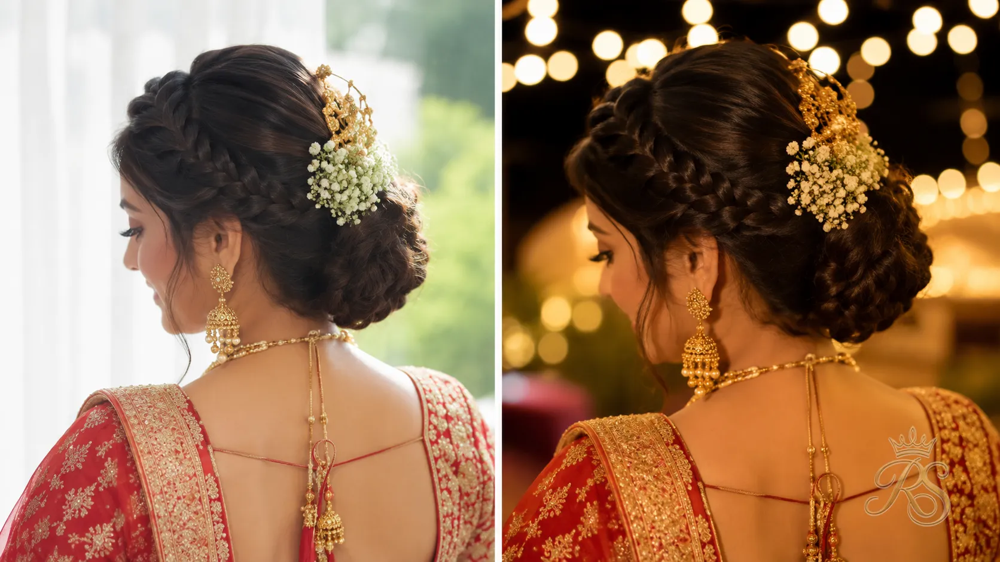
Built to last: the same style, hours apart — structured underneath, soft on the surface.
The secret isn't more product — it's the right architecture underneath. Every style in this guide is chosen because it holds its shape through movement, heat, and the weight of real gold jewelry.
Ask your hairstylist to build every look on a base of pin-secured sections, not just surface styling. A "hidden skeleton" of pins is what separates a style that survives sangeet from one that doesn't.
Understanding Your Hair Type & Texture First
Luxury bridal hairstyling starts before the wedding — with an honest read of your hair's texture, density, and how it behaves in humidity. Fine hair needs volumizing prep; thick hair needs weight distribution; curly hair needs styles that work with the curl pattern, not against it.
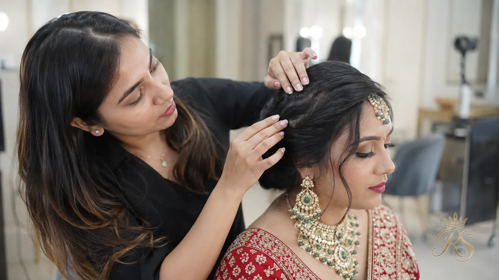
A texture consultation before the trial saves surprises on the wedding day.
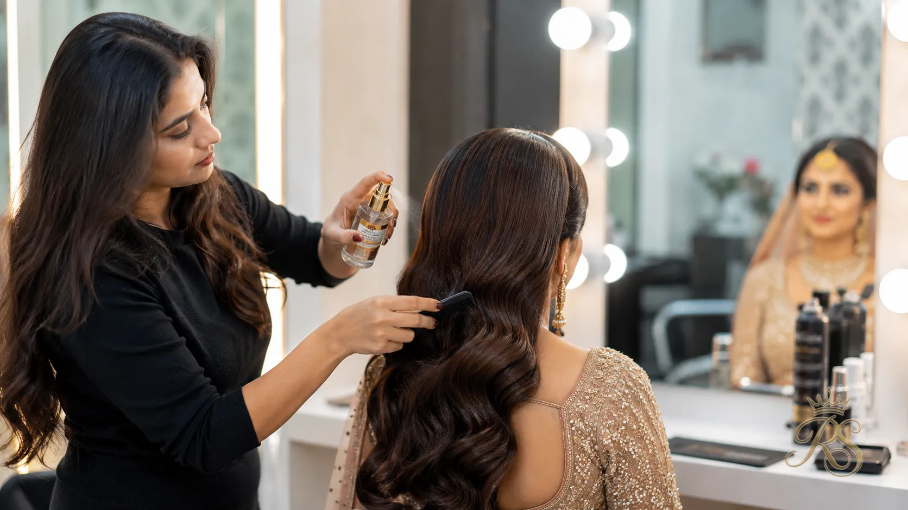
Anti-humidity prep matters more than the style itself in coastal or monsoon venues.
Bring reference photos, but let your stylist adapt them to your actual hair — a style that photographs beautifully on someone else's texture may not hold the same way on yours.
Mehendi: Playful, Braided, Floral
Mehendi calls for movement and softness — braids threaded with fresh flowers, low buns that won't smudge against a chair back, and styles that photograph beautifully from every angle while your hands are covered in henna.
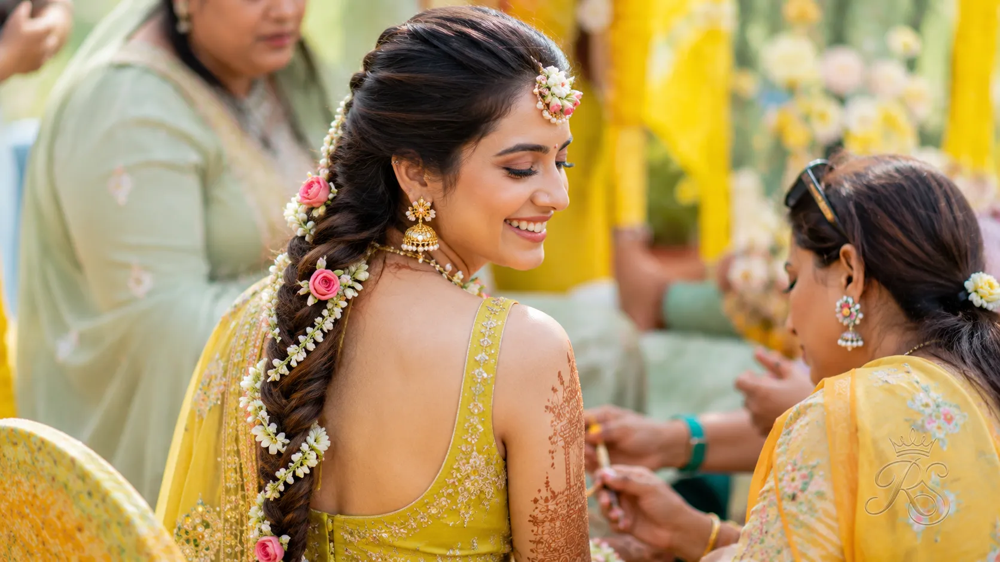
Floral braid: fresh strings of jasmine woven directly into a fishtail base.
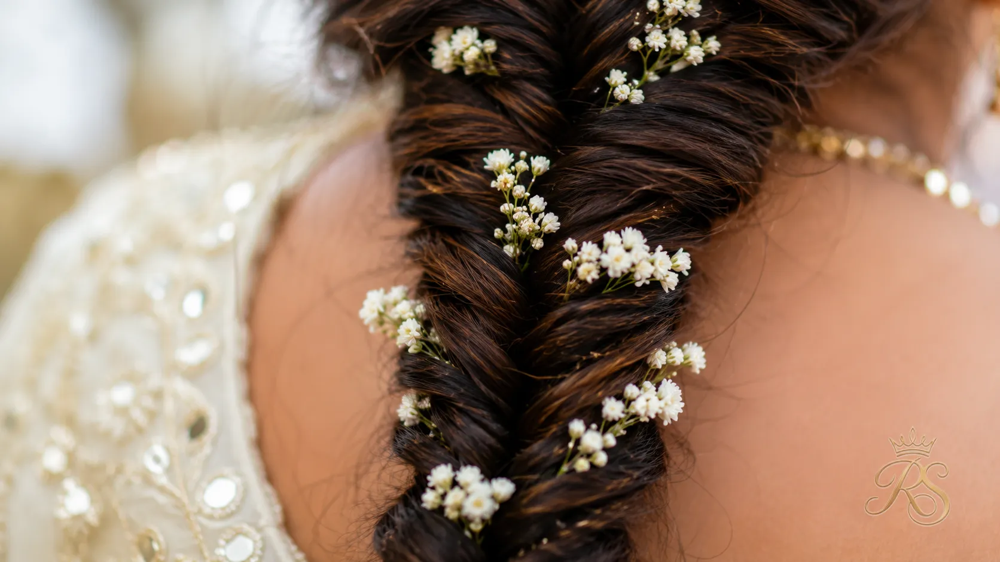
- Low, off-center buns keep hair off the back and shoulders in outdoor heat
- Fresh flowers should be pinned into pre-set sections, not tucked loosely
- A light dry shampoo at the roots keeps volume through an afternoon event
Sangeet: Voluminous, Glam, Dance-Proof
Sangeet is the night for volume, shine, and drama — but it's also the night with the most movement. Every style here is pinned to survive a full dance floor, not just a photo booth.
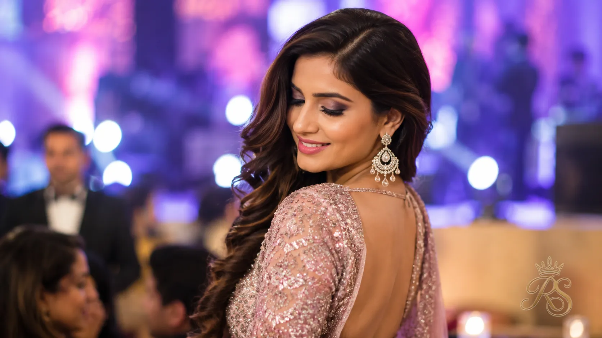
Glam waves: set with a curling wand, then locked with a flexible-hold spray.
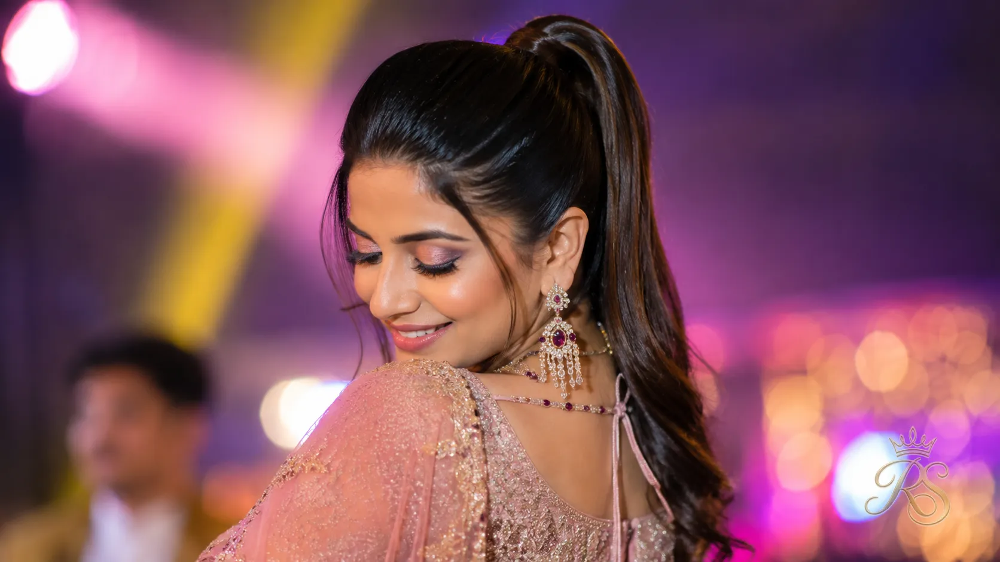
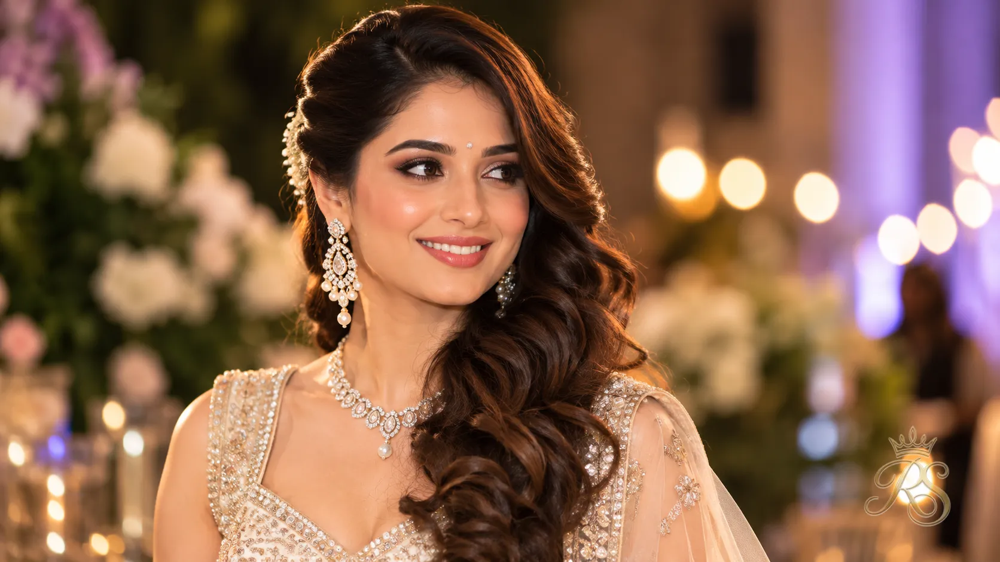
For sangeet, ask your stylist for a "double anchor" — pins crossed in an X at the crown, not just single pins. It's the difference between a style that survives three hours of dancing and one that doesn't survive the first song.
Wedding Day: Regal, Structural, Jewelry-Ready
The wedding day hairstyle has one job above all: carry the weight of maang tikka, jhoomar, or a heavy dupatta without shifting for the entire ceremony. Structure and grip matter more than anything else here.
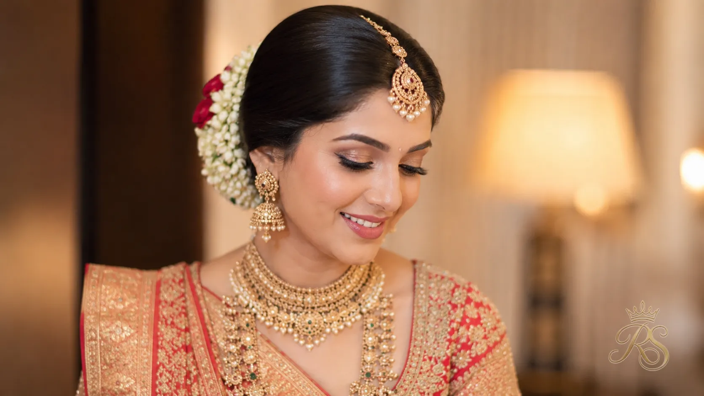
Classic Netted Bun
A smooth, net-secured bun that anchors heavy jewelry and holds a veil or dupatta pin without slipping.
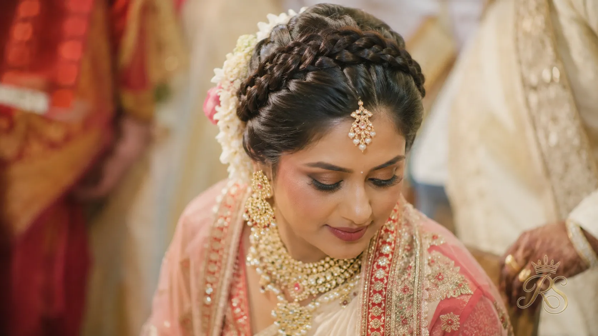
Braided Crown
A structural braid that wraps the crown of the head, giving the maang tikka a built-in anchor point.
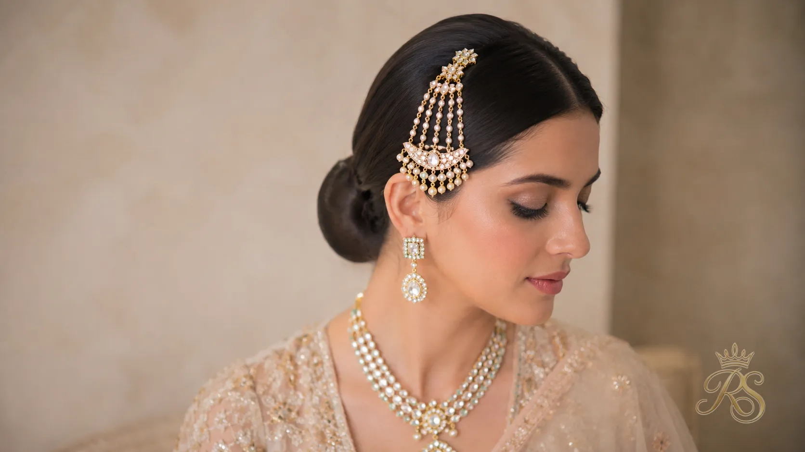
Sleek Chignon
A polished, low-set chignon for brides who want the jewelry — not the hair — to be the statement.
"The best wedding-day hairstyle is the one you forget you're wearing — because it's still exactly where it started, hours later."
Reception: The Second Look
Reception is where many brides choose to let their hair down — literally. Open, glamorous waves paired with a lighter jewelry set give a softer, more contemporary contrast to the structured wedding-day look.
The reveal: a switch from structured updo to soft, open waves for the reception entrance.
If you're planning a hairstyle change between wedding and reception, tell your stylist on day one — some updos are built specifically to release into waves later without a full re-wash.
Long-Lasting Styling Techniques & Products
Longevity is a technique, not a product line. The right backcombing, the right pin placement, and the right layering of hold-level products is what actually keeps a style intact through 10+ hour wedding days.
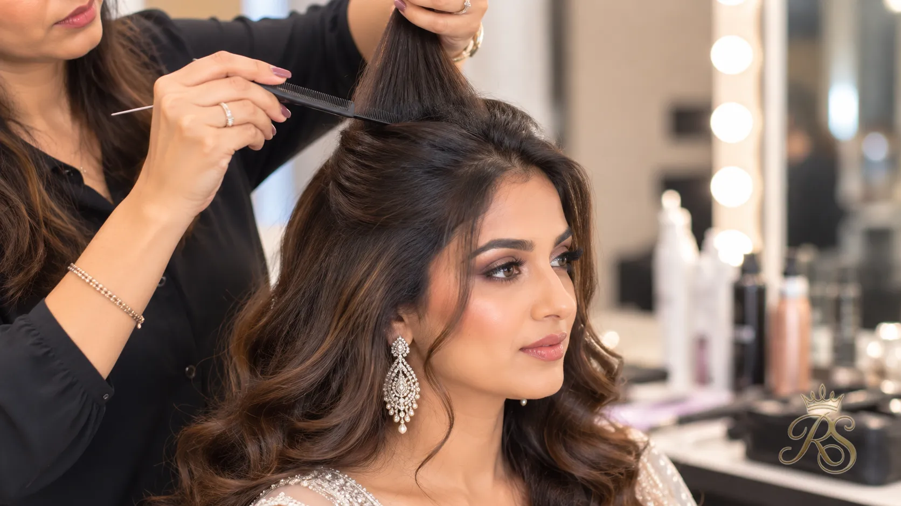
Backcombing at the crown creates a base that holds shape without added weight.
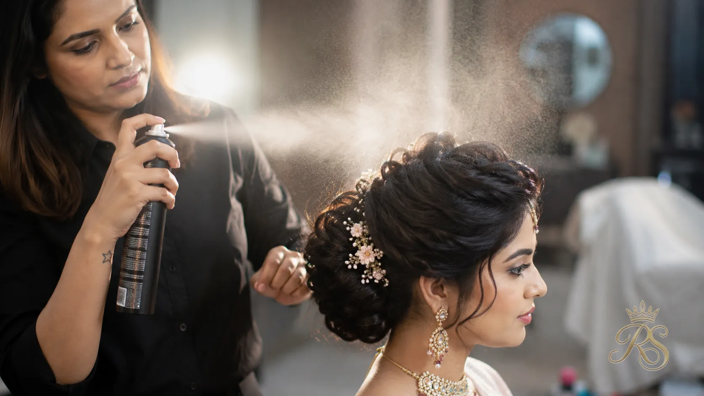
A fine-mist, flexible-hold spray outperforms a single heavy coat.
- Texturizing spray on dry hair before styling gives pins something to grip
- Setting each section before moving to the next prevents unraveling
- A light finishing oil on ends only — never at the roots — keeps shine without weighing hair down
Braids That Survive 3 Days
Braids are the most forgiving long-wear style in a bridal hairstylist's toolkit — tightly woven strands naturally resist frizz and slipping better than loose curls do.
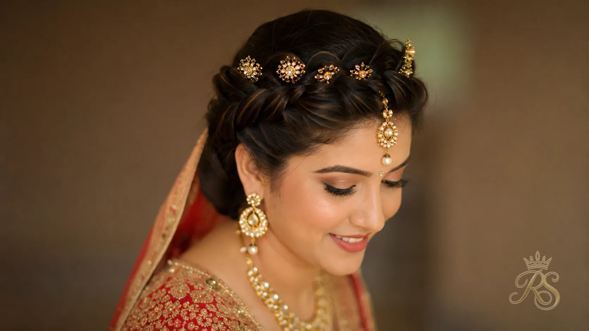
Dutch braid crown: a raised, structural braid that doubles as a jewelry anchor.
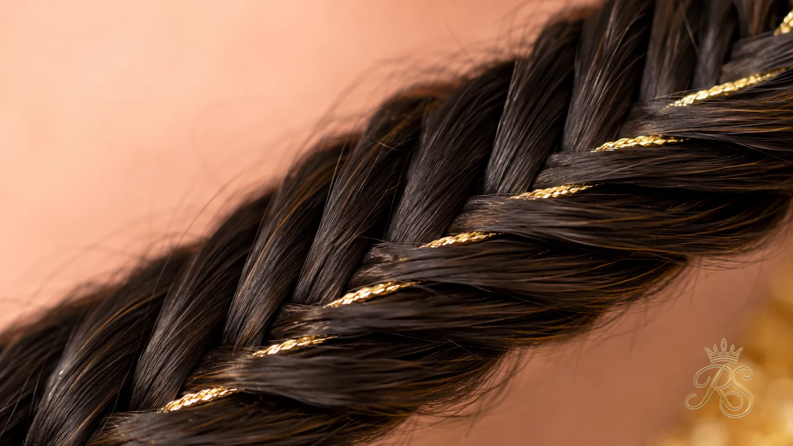
Bun & Updo Styles for Heat & Humidity
For outdoor ceremonies in Rajasthan, Goa, or Kerala, humidity-resistant buns and low updos consistently outperform loose, voluminous styles.
A low, tight bun is the most humidity-resistant option for outdoor venues.
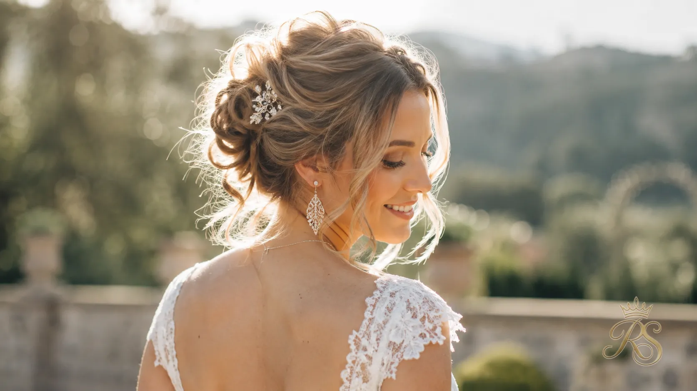
Texturized updos hide the earliest signs of frizz better than sleek ones.
Hair Jewelry & Accessories by Region
India's regional hair jewelry traditions each demand a slightly different base hairstyle. Choosing the right style for your accessories is as important as choosing the accessories themselves.
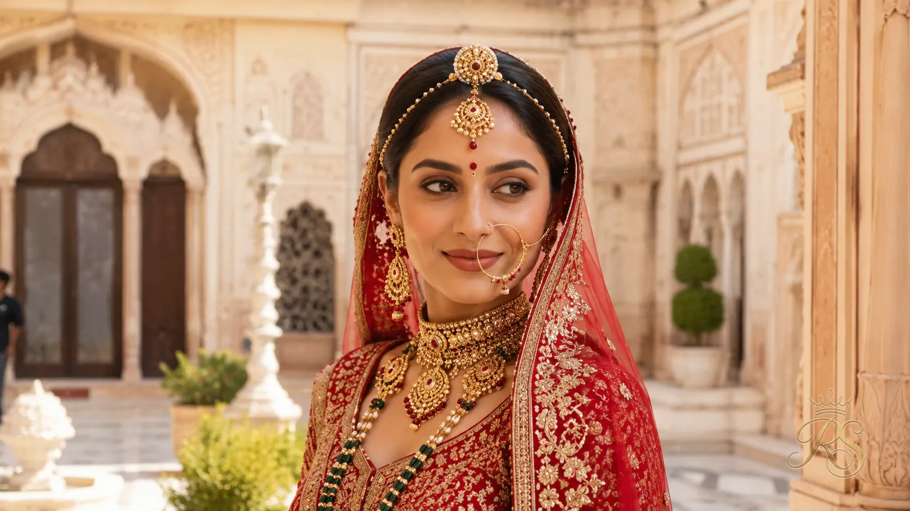
Borla & Maang Tikka
Worn over a center-parted, sleek base that keeps the borla sitting flat against the hairline.
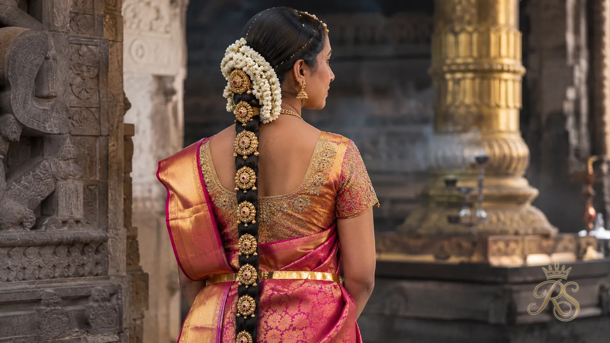
Jadai Nagas & Gajra
A long, structured braid dressed with gold jadai nagas and strings of fresh jasmine gajra.
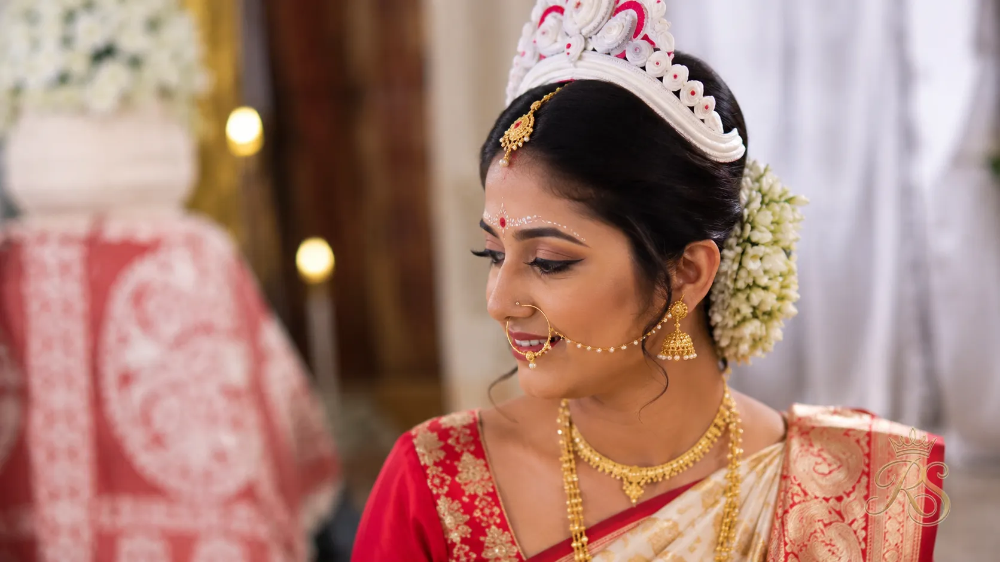
Mukut Headpiece
Sits over a firm, rounded bun that gives the shola mukut a stable, symmetrical base.
Prep: The Week Before
Luxury bridal hair isn't built the morning of — it's built in the two weeks before, with treatments timed so hair is at its healthiest, not its most experimented-on, on the wedding day.
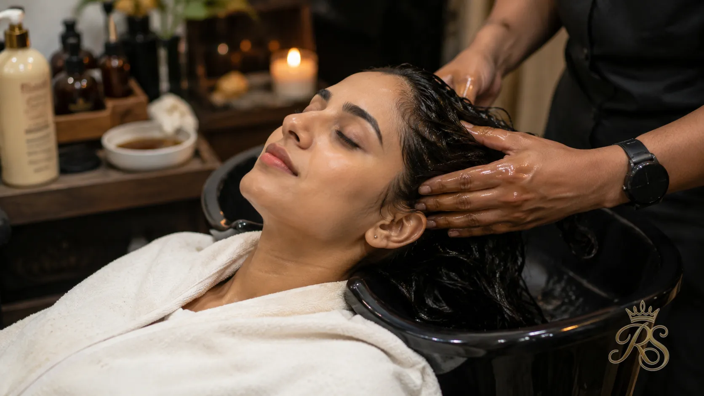
A deep-conditioning spa two weeks out gives hair time to recover before styling.
| Timeline | Focus | Why It Matters |
|---|---|---|
| Day −14 | Deep conditioning & trim | Restores health without changing length too close to the wedding |
| Day −7 | Full hairstyle trial | Confirms hold, texture behavior, and jewelry fit in advance |
| Day −2 | Gloss treatment | Adds shine without altering how the hair takes pins |
| Wedding morning | Wash 24 hrs prior, not same-day | Slightly second-day hair holds pins and volume far better than freshly washed hair |
Touch-Up Kit for Multi-Day Events
A well-packed touch-up kit is what separates a bride who looks composed at midnight from one who's fighting her hairstyle by the second event.
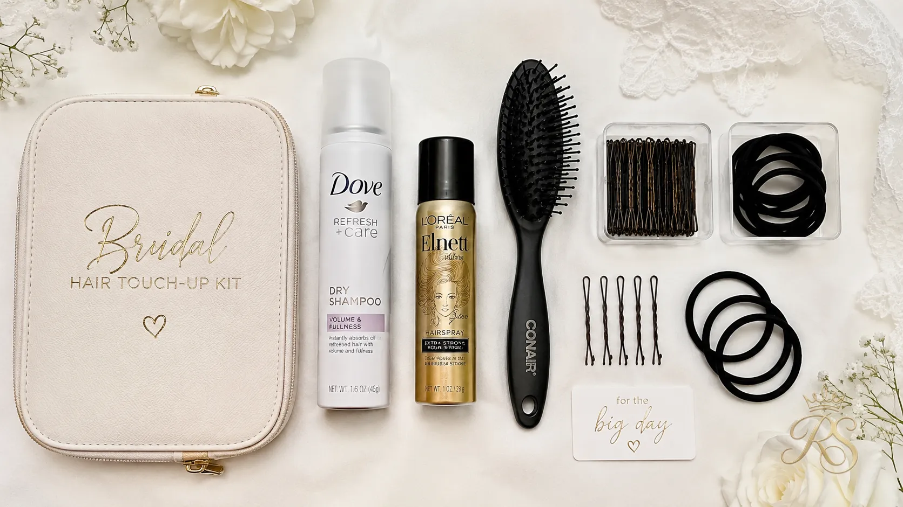
Pack this: the essentials for a full multi-day wedding touch-up kit.
- Matching bobby pins in your exact hair shade — spares always go missing
- Travel-size dry shampoo for root refresh between events
- Mini flexible-hold hairspray for quick resets
- A small detangling brush and a few covered hair ties
Hairstylist Booking Checklist
Luxury bridal hairstyles depend as much on who you book as on the style you choose. Vet your stylist the way you would any other major wedding vendor.
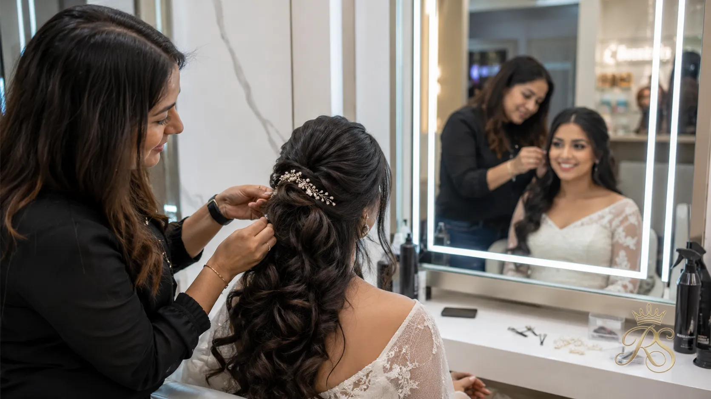
Always book a trial before confirming your wedding-day stylist.
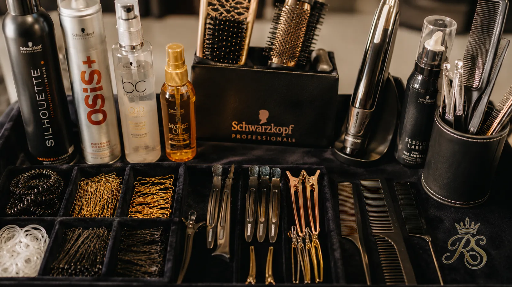
Ask what's in the kit — humidity spray and long-hold pins are non-negotiable.
- Confirm they've styled hair for multi-day weddings before, not just single events
- Ask for their touch-up policy between events on the same day
- Lock in start times with a buffer — bridal hair always takes longer than planned
Common Mistakes to Avoid
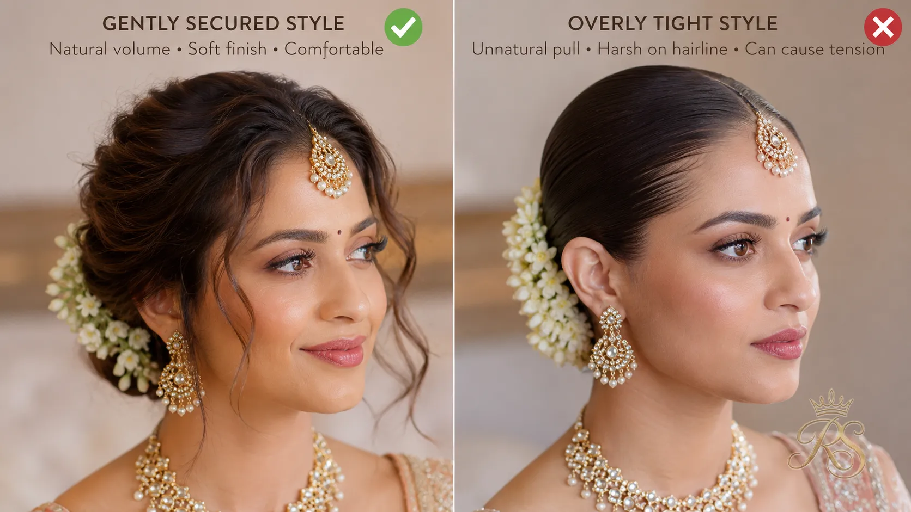
Too-tight styling causes headaches by hour three — and doesn't actually hold longer.
- Choosing a style you've never trialed on your actual hair texture
- Washing hair the same morning as the wedding, which loosens grip
- Skipping a touch-up kit and assuming the salon look will last unaided
- Overlooking jewelry weight when choosing the base hairstyle
Final Thoughts
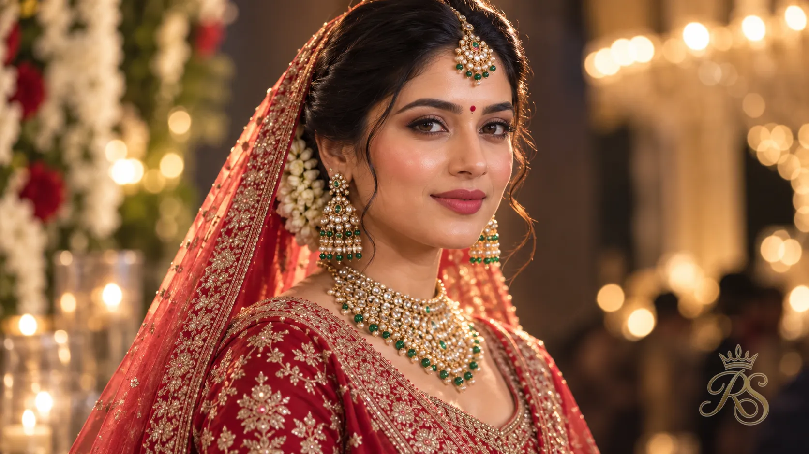
Still perfect, hours later — the real measure of a luxury bridal hairstyle.
The most beautiful bridal hairstyle isn't the one that photographs best at 9am — it's the one still holding its shape at midnight, after the dancing, the dupattas, and the jewelry. Plan for longevity from the very first trial, and every day of your celebration will look effortless.
"Luxury isn't just how a hairstyle looks — it's how little you have to think about it once it's done."